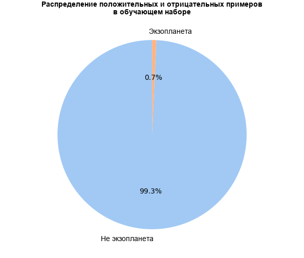
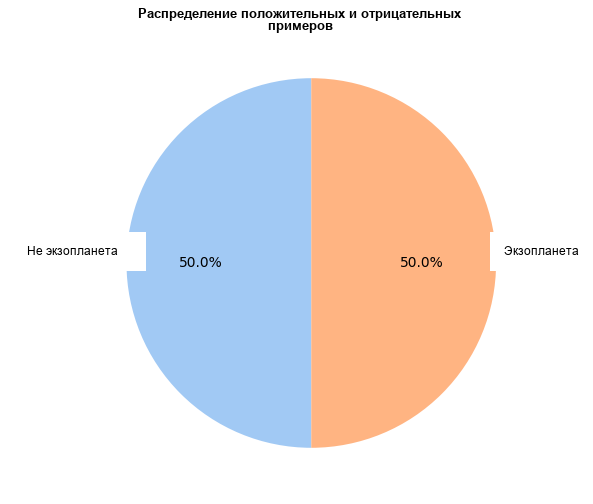
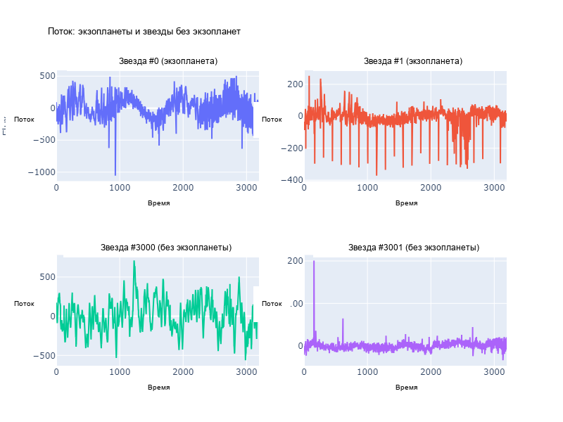
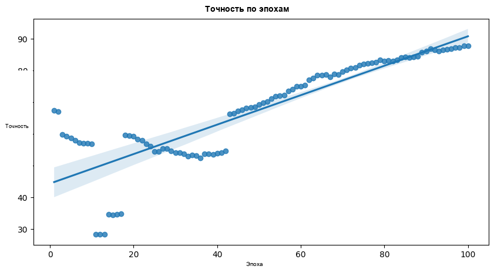
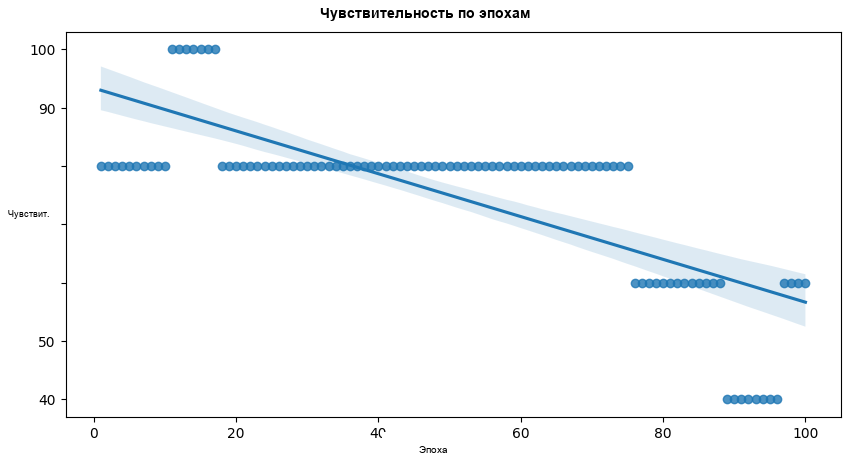
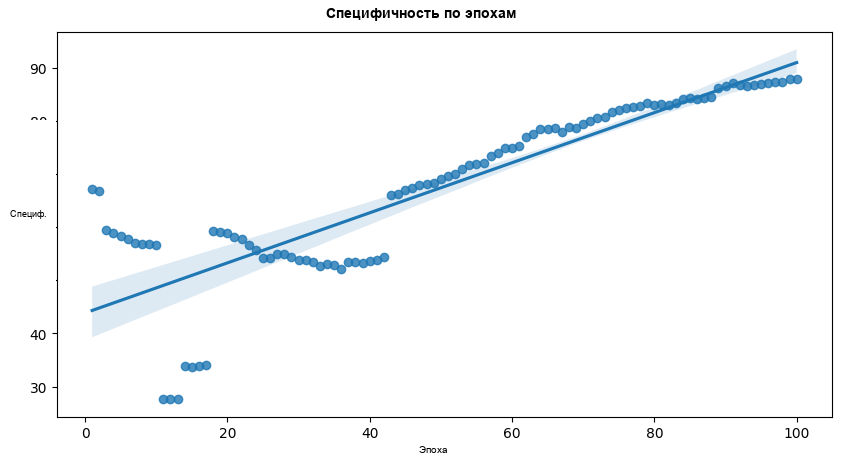
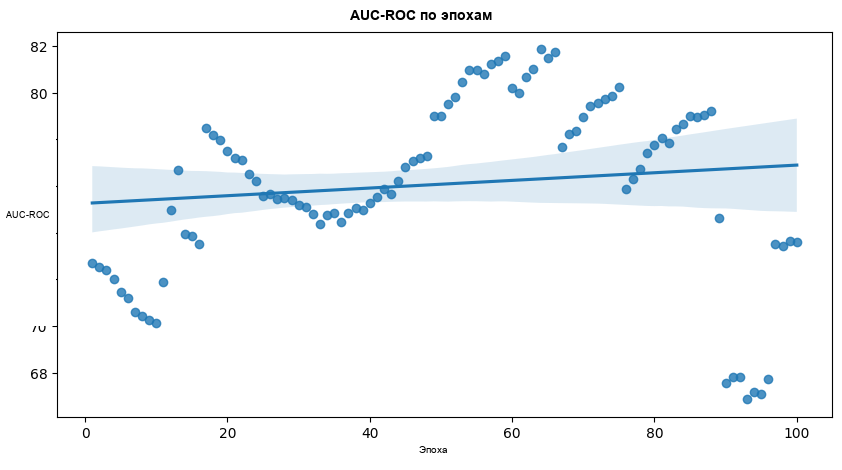
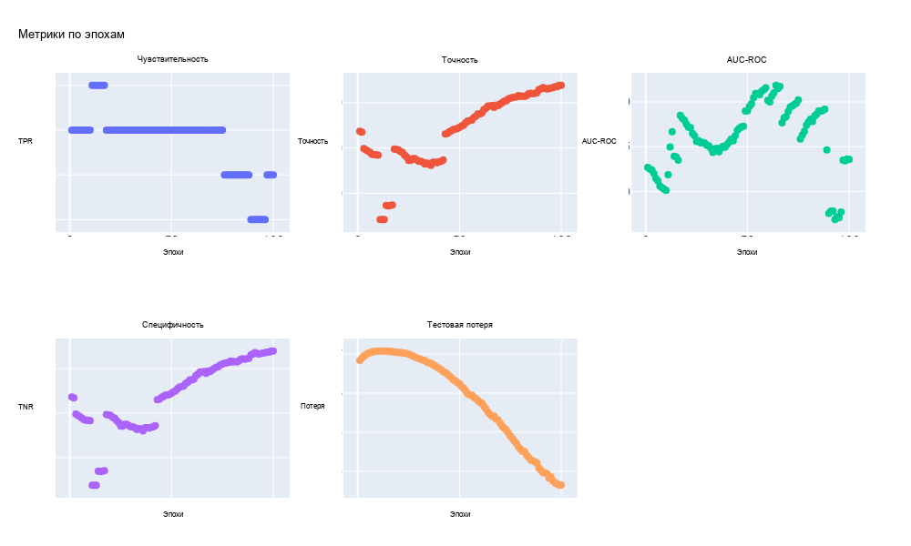

Русский перевод. Неофициальный перевод актуальной документации snnTorch latest (0.9.4). Оригинал: https://snntorch.readthedocs.io/en/latest/. Документация распространяется по лицензии CC BY-SA 3.0.
Охотник за экзопланетами: поиск планет по интенсивности света
Учебник написан Ruhai Lin, Aled dela Cruz и Karina Aguilar

Серия учебных пособий snnTorch основана на следующей статье. Если вы считаете эти ресурсы или код полезными в своей работе, пожалуйста, укажите следующий источник:
Примечание
- Этот учебник является статической нередактируемой версией. Интерактивные редактируемые версии доступны по следующим ссылкам:
В этом учебнике вы узнаете:
Как обучать спайковые нейронные сети для данных временных рядов,
Использование SMOTE для работы с несбалансированными наборами данных,
Метрики помимо точности для оценки производительности модели,
Некоторые знания по астрономии
Сначала установите библиотеку snntorch, прежде чем запускать любой из приведенных ниже кодов.
Установите последнюю версию дистрибутива snnTorch из PyPi:
pip install snntorch
Затем импортируйте библиотеки, как показано в коде ниже.
# imports
import snntorch as snn
from snntorch import surrogate
# pytorch
import torch
import torch.nn as nn
import torch.optim as optim
import torch.nn.functional as F
from torch.utils.data import DataLoader, Dataset
from torchvision import transforms
# SMOTE
from imblearn.over_sampling import SMOTE
from collections import Counter
# plot
import matplotlib.pyplot as plt
import numpy as np
import pandas as pd
import seaborn as sns
import plotly.express as px
import plotly.graph_objects as go
from plotly.subplots import make_subplots
# metric (AUC, ROC, sensitivity & specificity)
from sklearn.metrics import confusion_matrix
from sklearn.metrics import roc_auc_score
0. Обнаружение экзопланет (необязательно)
Прежде чем углубиться в код, давайте разберемся, что такое обнаружение экзопланет.
0.1 Транзитный метод
Транзитный метод — это широко используемая и успешная техника для обнаружения экзопланет. Когда экзопланета проходит по диску своей звезды, это вызывает временное уменьшение потока света (яркости) звезды. По сравнению с другими методами, транзитный метод обнаружил наибольшее количество планет.
Астрономы используют телескопы, оснащенные фотометрами или спектрофотометрами, чтобы непрерывно отслеживать яркость звезды с течением времени. Повторные наблюдения множества транзитов позволяют астрономам собирать более подробную информацию об экзопланете, такую как ее атмосфера и наличие спутников.
Космические телескопы, такие как Kepler и TESS (Transiting Exoplanet Survey Satellite) от NASA, сыграли важную роль в открытии тысяч экзопланет с помощью транзитного метода. Без атмосферы Земли, мешающей наблюдениям, помехи минимальны, что позволяет проводить более точные измерения. Транзитный метод остается ключевым инструментом для углубления нашего понимания экзопланетных систем. Для получения дополнительной информации о транзитном методе вы можете посетить NASA Exoplanet Exploration Страница.
0.2 Проблемы
Недостатком этого метода является то, что угол между орбитальной плоскостью планеты и направлением линии взгляда наблюдателя должен быть достаточно малым. Поэтому вероятность возникновения этого явления не велика. Таким образом, необходимо выделять больше времени и ресурсов для обнаружения и подтверждения существования экзопланеты. К таким ресурсам относятся телескоп Kepler и CoRoT от ESA, когда они еще работали.
Еще один аспект, который следует учитывать, — это энергопотребление устройства, отправляемого в глубокий космос. Например, спутник, отправленный в космос для наблюдения за интенсивностью света звезд в Солнечной системе. Поскольку устройство находится в космосе, энергия становится ограниченным и ценным ресурсом. Типичные модели ИИ не подходят для обработки наблюдаемых данных и идентификации экзопланет из-за большого количества энергии, необходимой для их поддержания.
Поэтому спайковая нейронная сеть (SNN) может хорошо подойти для этой задачи.
1. Подготовка набора данных об экзопланетах
Следующие инструкции описывают, как получить набор данных для использования в SNN.
1.1 Google Drive / Kaggle API
Простой способ подключить .csv файл с Google Colab — это поместить файлы в Google Диск. Чтобы импортировать наш обучающий набор и наш тестовый набор, нам нужно разместить следующие два файла в GDrive:
‘exoTrain.csv’
‘exoTest.csv’
Их можно скачать с Kaggle. Вы можете либо изменить блоки кода ниже, чтобы указать на выбранную папку, либо создать папку с именем SNN. Поместите ‘exoTrain.csv’ и ‘exoTest.csv’ в папку и запустите код ниже.
from google.colab import drive
drive.mount('/content/drive')
cd "/content/drive/My-Drive/SNN"
Используйте ls` чтобы подтвердить exoTest.csv и exoTrain.csv доступны.
ls
exoTest.csv exoTrain.csv SNN_Exoplanet_Hunter_Tutorial.ipynb
1.2 Загрузка набора данных
Приведенный ниже блок кода основан на официальном учебнике PyTorch по пользовательским наборам данных
# Step 1: Prepare the dataset
class CustomDataset(Dataset):
def __init__(self, csv_file, transform=None):
with open(csv_file,"r") as f:
self.data = pd.read_csv(f) # read the files
self.labels = self.data.iloc[:,0].values - 1 # set the first line of the input data as the label (Originally 1 or 2, but we -1 here so they become 0 or 1)
self.features = self.data.iloc[:, 1:].values # set the rest of the input data as the feature (FLUX over time)
self.transform = transform # transformation (which is None) that will be applied to samples.
# If you want to have a look at how does this dataset look like with pandas,
# you can enable the line below.
# print(data.head(5))
def __len__(self): # function that gives back the size of the dataset (how many samples)
return len(self.labels)
def __getitem__(self, idx): # retrieves a data sample from the dataset
label = self.labels[idx] # fetch label of sample
feature = self.features[idx] # fetch features of sample
if self.transform: # if there is a specified transformation, transform the data
feature = self.transform(feature)
sample = {'feature': feature, 'label': label}
return sample
train_dataset = CustomDataset('./exoTrain.csv') # grab the training data
test_dataset = CustomDataset('./exoTest.csv') # grab the test data
# print(train_dataset.__getitem__(37));
1.3 Аугментация набора данных
Учитывая низкую вероятность обнаружения экзопланет, этот набор данных сильно несбалансирован. Большинство образцов являются отрицательными, то есть из наблюдаемых данных об интенсивности света очень мало экзопланет. Если ваша модель будет просто предсказывать «нет экзопланеты» для каждого образца, то она достигнет очень высокой точности. Это указывает на то, что точность является плохой метрикой успеха.
Давайте сначала изучим наши данные, чтобы понять, насколько они несбалансированы.
print("Class distribution in the original training dataset:", pd.Series(train_dataset.labels).value_counts())
print("Class distribution in the original testing dataset:", pd.Series(test_dataset.labels).value_counts())
Class distribution in the original training dataset: 0 5050
1 37
dtype: int64
Class distribution in the original testing dataset: 0 565
1 5
dtype: int64
То есть в обучающем наборе 5050 отрицательных образцов и только 37 положительных.
label_counts = np.bincount(train_dataset.labels)
label_names = ['Not Exoplanet','Exoplanet']
plt.figure(figsize=(8, 6))
plt.pie(label_counts, labels=label_names, autopct='%1.1f%%', startangle=90, colors=sns.color_palette('pastel'))
plt.title('Distribution of Positive and Negative Samples in the Training Dataset')
plt.show()

Чтобы справиться с несбалансированностью нашего набора данных, давайте применим технику синтетического увеличения выборки меньшинства (SMOTE). SMOTE работает путем генерации синтетических образцов из класса меньшинства для балансировки распределения (обычно реализуется с использованием стратегии ближайших соседей). Применяя SMOTE, мы пытаемся уменьшить смещение в сторону звезд без экзопланет (класс большинства).
# Step 2: Apply SMOTE to deal with the unbalanced data
smote = SMOTE(sampling_strategy='all') # initialize a smote, while sampling_strategy='all' means setting all the classes to the same size
train_dataset.features, train_dataset.labels = smote.fit_resample(train_dataset.features, train_dataset.labels) # update the labels and features to the resampled data
print("Class distribution in the training dataset after SMOTE:", pd.Series(train_dataset.labels).value_counts())
print("Class distribution in the testing dataset after SMOTE:", pd.Series(test_dataset.labels).value_counts())
Class distribution in the training dataset after SMOTE: 1 5050
0 5050
dtype: int64
Class distribution in the testing dataset after SMOTE: 0 565
1 5
dtype: int64
label_counts = np.bincount(train_dataset.labels)
label_names = ['Not Exoplanet','Exoplanet']
plt.figure(figsize=(8, 6))
plt.pie(label_counts, labels=label_names, autopct='%1.1f%%', startangle=90, colors=sns.color_palette('pastel'))
plt.title('Distribution of Positive and Negative Samples')
plt.show()

1.4 Создание DataLoader
Мы создадим загрузчик данных (dataloader) для пакетной обработки и перемешивания данных во время обучения и тестирования. При инициализации загрузчика данных параметры включают: загружаемый набор данных, размер пакета, аргумент shuffle для определения, следует ли перемешивать набор данных после каждой эпохи, и drop_last параметр, который определяет, будет ли отброшен потенциальный последний «неполный» пакет.
# Step 3: Create dataloader
batch_size = 64 # determines the number of samples in each batch during training
spike_grad = surrogate.fast_sigmoid(slope=25) #
beta = 0.5 # initialize a beta value of 0.5
train_dataloader = DataLoader(train_dataset, batch_size=batch_size, shuffle=True, drop_last=True) # create a dataloader for the trainset
test_dataloader = DataLoader(test_dataset, batch_size=batch_size, shuffle=False, drop_last=True) # create a dataloader for the testset
1.5 Описание данных
После загрузки данных давайте посмотрим, как выглядят наши данные.
print(train_dataset.data.head(1))
LABEL FLUX.1 FLUX.2 FLUX.3 FLUX.4 FLUX.5 FLUX.6 FLUX.7 FLUX.8 0 2 93.85 83.81 20.1 -26.98 -39.56 -124.71 -135.18 -96.27 FLUX.9 ... FLUX.3188 FLUX.3189 FLUX.3190 FLUX.3191 FLUX.3192 0 -79.89 ... -78.07 -102.15 -102.15 25.13 48.57 FLUX.3193 FLUX.3194 FLUX.3195 FLUX.3196 FLUX.3197 0 92.54 39.32 61.42 5.08 -39.54 [1 rows x 3198 columns]
fig = make_subplots(rows=2, cols=2,subplot_titles=("Star #0 (Exoplanet)", "Star #1 (Exoplanet)",
"Star #3000 (No-Exoplanet)", "Star #3001 (No-Exoplanet)"))
fig.add_trace(
go.Scatter(y=train_dataset.__getitem__(0)['feature']),
row=1, col=1
)
fig.add_trace(
go.Scatter(y=train_dataset.__getitem__(1)['feature']),
row=1, col=2
)
fig.add_trace(
go.Scatter(y=train_dataset.__getitem__(3000)['feature']),
row=2, col=1
)
fig.add_trace(
go.Scatter(y=train_dataset.__getitem__(3001)['feature']),
row=2, col=2
)
for i in range(1, 5):
fig.update_xaxes(title_text="Time", row=(i-1)//2 + 1, col=(i-1)%2 + 1)
fig.update_yaxes(title_text="Flux", row=(i-1)//2 + 1, col=(i-1)%2 + 1)
fig.update_layout(height=600, width=800, title_text="Exoplanets Flux vs No-Exoplanet Flux",showlegend=False)
fig.show()

2. Обучение и тестирование
2.1 Определение сети с помощью snnTorch
Приведенный ниже блок кода использует тот же синтаксис, что и официальный snnTorch учебник. Однако, в отличие от других учебников, эта модель параллельно обрабатывает данные по всей последовательности. В этом смысле она больше похожа на то, как механизмы на основе внимания обрабатывают данные. Превращение этого в более «онлайновый» метод, вероятно, потребует предварительной обработки для понижения частоты дискретизации чрезвычайно длинной последовательности.
# Step 4: Define Network
class Net(nn.Module):
def __init__(self):
super().__init__()
# Initialize layers (3 linear layers and 3 leaky layers)
self.fc1 = nn.Linear(3197, 128) # takes an input of 3197 and outputs 128
self.lif1 = snn.Leaky(beta=beta, spike_grad=spike_grad)
self.fc2 = nn.Linear(64, 64) # takes an input of 64 and outputs 68
self.lif2 = snn.Leaky(beta=beta, spike_grad=spike_grad)
self.fc3 = nn.Linear(32, 2) # takes in 32 inputs and outputs our two outputs (planet with/without an exoplanet)
self.lif3 = snn.Leaky(beta=beta, spike_grad=spike_grad)
def forward(self, x):
# Initialize hidden states and outputs at t=0
mem1 = self.lif1.init_leaky()
mem2 = self.lif2.init_leaky()
cur1 = F.max_pool1d(self.fc1(x), 2)
spk1, mem1 = self.lif1(cur1, mem1)
cur2 = F.max_pool1d(self.fc2(spk1), 2)
spk2, mem2 = self.lif2(cur2, mem2)
cur3 = self.fc3(spk2.view(batch_size, -1))
# return cur3
return cur3
# device = torch.device("cuda") if torch.cuda.is_available() else torch.device("mps") if torch.backends.mps.is_available() else torch.device("cpu")
model = Net() # initialize the model to the new class.
2.2 Определение функции потерь и оптимизатора
# Step 5: Define the Loss function and the Optimizer
criterion = nn.CrossEntropyLoss() # look up binarycross entropy if we have time
optimizer = optim.SGD(model.parameters(), lr=0.001) # stochastic gradient descent with a learning rate of 0.001
2.3 Обучение и тестирование модели на каждой эпохе
Чувствительность
Чувствительность (полнота / истинно положительный показатель) измеряет долю фактически положительных случаев, правильно идентифицированных моделью. Она указывает на способность модели правильно обнаруживать или захватывать все положительные экземпляры из общего числа фактически положительных.
TP означает истинно положительное предсказание, то есть количество положительных образцов, которые были правильно предсказаны. FN означает ложноотрицательное предсказание, то есть количество отрицательных образцов, которые ошибочно были предсказаны как положительные.
Специфичность
С другой стороны, специфичность измеряет долю фактически отрицательных случаев, правильно идентифицированных моделью. Она указывает на способность модели правильно исключать отрицательные экземпляры из общего числа фактических отрицательных.
Аналогично, TN означает истинно отрицательное предсказание, FP — ложноположительное предсказание.
AUC-ROC
Метрика AUC-ROC (площадь под ROC-кривой) обычно используется для оценки производительности моделей бинарной классификации, отображая зависимость истинно положительной частоты от ложно положительной частоты. Она количественно оценивает способность модели различать классы, в частности, ее способность правильно ранжировать или упорядочивать предсказанные вероятности.
roc_auc_score(): возвращает значение между 0 и 1.
Значения \(> 0.5\) и значение, близкое к 1, указывает на то, что модель хорошо различает два класса
Значения, близкие к 0.5, означают, что модель работает не лучше случайного угадывания
Значения \(< 0.5`\) демонстрируют, что модель работает хуже случайного угадывания
Поскольку для звезд с экзопланетами имеется минимальное количество тестовых значений, эти метрики гораздо лучше, чем одна лишь точность, для оценки производительности модели. Давайте перечислим все переменные, которые нам нужны:
# create a pandas dataframe to hold the current epoch, the accuracy， sensitivity, specificity, auc-roc and loss
results = pd.DataFrame(columns=['Epoch', 'Accuracy', 'Sensitivity', 'Specificity', 'AUC-ROC', 'Test Loss'])
А затем определим, сколько эпох мы хотим обучать модель:
num_epochs = 100 # initialize a certain number of epoch iterations
Обратите внимание, что оптимальный диапазон эпох для нашего набора данных составляет примерно от 50 до 500.
Теперь давайте обучим модель.
for epoch in range(num_epochs): # iterate through num_epochs
model.train() # forward pass
for data in train_dataloader: # iterate through every data sample
inputs, labels = data['feature'].float(), data['label'] # Float
optimizer.zero_grad() # clear previously stored gradients
outputs = model(inputs) #
loss = criterion(outputs, labels) # calculates the difference (loss) between actual values and predictions
loss.backward() # backward pass on the loss
optimizer.step() # updates parameters
# Test Set, evaluate the model every epoch
model.eval()
with torch.no_grad():
test_loss = 0.0
correct = 0
total = 0
all_labels = []
all_predicted = []
all_probs = []
for data in test_dataloader:
inputs, labels = data['feature'].float(), data['label']
outputs = model(inputs)
test_loss += criterion(outputs, labels).item()
_, predicted = torch.max(outputs.data, 1)
total += labels.size(0)
correct += (predicted == labels).sum().item()
all_labels.extend(labels.cpu().numpy())
all_predicted.extend(predicted.cpu().numpy())
softmax = torch.nn.Softmax(dim=1)
probabilities = softmax(outputs)[:, 1] # Assuming 1 represents the positive class
all_probs.extend(probabilities.cpu().numpy())
# output the accuracy (even though it is not very useful in this case)
accuracy = 100 * correct / total
# calculate teat loss
# test_loss =
# initialize a confusing matrix
cm = confusion_matrix(all_labels, all_predicted)
# grab the amount of true negatives and positives, and false negatives and positives.
tn, fp, fn, tp = cm.ravel()
# calculate sensitivity
sensitivity = 100 * tp / (tp + fn) if (tp + fn) > 0 else 0.0
# calculate specificity
specificity = 100 * tn / (tn + fp) if (tn + fp) > 0 else 0.0
# calculate AUC-ROC
auc_roc = 100 * roc_auc_score(all_labels, all_probs)
print(
f'Epoch [{epoch + 1}/{num_epochs}] Test Loss: {test_loss / len(test_dataloader):.2f} '
f'Test Accuracy: {accuracy:.2f}% Sensitivity: {sensitivity:.2f}% Specificity: {specificity:.2f}% AUC-ROC: {auc_roc:.4f}%'
)
results = results._append({
'Epoch': epoch + 1,
'Accuracy': accuracy,
'Sensitivity': sensitivity,
'Specificity': specificity,
'Test Loss': test_loss / len(test_dataloader),
'AUC-ROC': auc_roc
}, ignore_index=True)
Epoch [1/100] Test Loss: 0.68 Test Accuracy: 67.38% Sensitivity: 80.00% Specificity: 67.26% AUC-ROC: 72.6824%
Epoch [2/100] Test Loss: 0.69 Test Accuracy: 66.99% Sensitivity: 80.00% Specificity: 66.86% AUC-ROC: 72.5247%
Epoch [3/100] Test Loss: 0.69 Test Accuracy: 59.77% Sensitivity: 80.00% Specificity: 59.57% AUC-ROC: 72.4063%
Epoch [4/100] Test Loss: 0.70 Test Accuracy: 59.18% Sensitivity: 80.00% Specificity: 58.97% AUC-ROC: 72.0316%
Epoch [5/100] Test Loss: 0.70 Test Accuracy: 58.59% Sensitivity: 80.00% Specificity: 58.38% AUC-ROC: 71.4596%
Epoch [6/100] Test Loss: 0.70 Test Accuracy: 58.01% Sensitivity: 80.00% Specificity: 57.79% AUC-ROC: 71.2032%
Epoch [7/100] Test Loss: 0.71 Test Accuracy: 57.23% Sensitivity: 80.00% Specificity: 57.00% AUC-ROC: 70.6114%
Epoch [8/100] Test Loss: 0.71 Test Accuracy: 57.03% Sensitivity: 80.00% Specificity: 56.80% AUC-ROC: 70.4339%
Epoch [9/100] Test Loss: 0.71 Test Accuracy: 57.03% Sensitivity: 80.00% Specificity: 56.80% AUC-ROC: 70.2761%
Epoch [10/100] Test Loss: 0.71 Test Accuracy: 56.84% Sensitivity: 80.00% Specificity: 56.61% AUC-ROC: 70.1183%
Epoch [11/100] Test Loss: 0.71 Test Accuracy: 28.32% Sensitivity: 100.00% Specificity: 27.61% AUC-ROC: 71.8738%
Epoch [12/100] Test Loss: 0.71 Test Accuracy: 28.32% Sensitivity: 100.00% Specificity: 27.61% AUC-ROC: 74.9704%
Epoch [13/100] Test Loss: 0.71 Test Accuracy: 28.32% Sensitivity: 100.00% Specificity: 27.61% AUC-ROC: 76.6667%
Epoch [14/100] Test Loss: 0.71 Test Accuracy: 34.57% Sensitivity: 100.00% Specificity: 33.93% AUC-ROC: 73.9448%
Epoch [15/100] Test Loss: 0.71 Test Accuracy: 34.38% Sensitivity: 100.00% Specificity: 33.73% AUC-ROC: 73.8659%
Epoch [16/100] Test Loss: 0.71 Test Accuracy: 34.57% Sensitivity: 100.00% Specificity: 33.93% AUC-ROC: 73.5108%
Epoch [17/100] Test Loss: 0.71 Test Accuracy: 34.77% Sensitivity: 100.00% Specificity: 34.12% AUC-ROC: 78.5010%
Epoch [18/100] Test Loss: 0.71 Test Accuracy: 59.57% Sensitivity: 80.00% Specificity: 59.37% AUC-ROC: 78.1854%
Epoch [19/100] Test Loss: 0.70 Test Accuracy: 59.38% Sensitivity: 80.00% Specificity: 59.17% AUC-ROC: 77.9684%
Epoch [20/100] Test Loss: 0.70 Test Accuracy: 59.18% Sensitivity: 80.00% Specificity: 58.97% AUC-ROC: 77.5148%
Epoch [21/100] Test Loss: 0.70 Test Accuracy: 58.40% Sensitivity: 80.00% Specificity: 58.19% AUC-ROC: 77.1795%
Epoch [22/100] Test Loss: 0.70 Test Accuracy: 58.01% Sensitivity: 80.00% Specificity: 57.79% AUC-ROC: 77.1203%
Epoch [23/100] Test Loss: 0.70 Test Accuracy: 56.84% Sensitivity: 80.00% Specificity: 56.61% AUC-ROC: 76.4892%
Epoch [24/100] Test Loss: 0.70 Test Accuracy: 56.05% Sensitivity: 80.00% Specificity: 55.82% AUC-ROC: 76.2130%
Epoch [25/100] Test Loss: 0.70 Test Accuracy: 54.49% Sensitivity: 80.00% Specificity: 54.24% AUC-ROC: 75.5819%
Epoch [26/100] Test Loss: 0.70 Test Accuracy: 54.49% Sensitivity: 80.00% Specificity: 54.24% AUC-ROC: 75.6607%
Epoch [27/100] Test Loss: 0.70 Test Accuracy: 55.27% Sensitivity: 80.00% Specificity: 55.03% AUC-ROC: 75.4438%
Epoch [28/100] Test Loss: 0.69 Test Accuracy: 55.27% Sensitivity: 80.00% Specificity: 55.03% AUC-ROC: 75.4832%
Epoch [29/100] Test Loss: 0.69 Test Accuracy: 54.69% Sensitivity: 80.00% Specificity: 54.44% AUC-ROC: 75.4043%
Epoch [30/100] Test Loss: 0.69 Test Accuracy: 54.10% Sensitivity: 80.00% Specificity: 53.85% AUC-ROC: 75.1874%
Epoch [31/100] Test Loss: 0.69 Test Accuracy: 54.10% Sensitivity: 80.00% Specificity: 53.85% AUC-ROC: 75.1085%
Epoch [32/100] Test Loss: 0.68 Test Accuracy: 53.71% Sensitivity: 80.00% Specificity: 53.45% AUC-ROC: 74.8126%
Epoch [33/100] Test Loss: 0.68 Test Accuracy: 52.93% Sensitivity: 80.00% Specificity: 52.66% AUC-ROC: 74.3590%
Epoch [34/100] Test Loss: 0.68 Test Accuracy: 53.32% Sensitivity: 80.00% Specificity: 53.06% AUC-ROC: 74.7337%
Epoch [35/100] Test Loss: 0.68 Test Accuracy: 53.12% Sensitivity: 80.00% Specificity: 52.86% AUC-ROC: 74.8323%
Epoch [36/100] Test Loss: 0.68 Test Accuracy: 52.34% Sensitivity: 80.00% Specificity: 52.07% AUC-ROC: 74.4379%
Epoch [37/100] Test Loss: 0.67 Test Accuracy: 53.71% Sensitivity: 80.00% Specificity: 53.45% AUC-ROC: 74.8521%
Epoch [38/100] Test Loss: 0.67 Test Accuracy: 53.71% Sensitivity: 80.00% Specificity: 53.45% AUC-ROC: 75.0493%
Epoch [39/100] Test Loss: 0.67 Test Accuracy: 53.52% Sensitivity: 80.00% Specificity: 53.25% AUC-ROC: 74.9507%
Epoch [40/100] Test Loss: 0.66 Test Accuracy: 53.91% Sensitivity: 80.00% Specificity: 53.65% AUC-ROC: 75.2465%
Epoch [41/100] Test Loss: 0.66 Test Accuracy: 54.10% Sensitivity: 80.00% Specificity: 53.85% AUC-ROC: 75.5424%
Epoch [42/100] Test Loss: 0.65 Test Accuracy: 54.69% Sensitivity: 80.00% Specificity: 54.44% AUC-ROC: 75.8580%
Epoch [43/100] Test Loss: 0.65 Test Accuracy: 66.21% Sensitivity: 80.00% Specificity: 66.07% AUC-ROC: 75.6607%
Epoch [44/100] Test Loss: 0.65 Test Accuracy: 66.41% Sensitivity: 80.00% Specificity: 66.27% AUC-ROC: 76.2130%
Epoch [45/100] Test Loss: 0.64 Test Accuracy: 67.19% Sensitivity: 80.00% Specificity: 67.06% AUC-ROC: 76.8245%
Epoch [46/100] Test Loss: 0.64 Test Accuracy: 67.58% Sensitivity: 80.00% Specificity: 67.46% AUC-ROC: 77.0611%
Epoch [47/100] Test Loss: 0.63 Test Accuracy: 68.16% Sensitivity: 80.00% Specificity: 68.05% AUC-ROC: 77.1992%
Epoch [48/100] Test Loss: 0.63 Test Accuracy: 68.36% Sensitivity: 80.00% Specificity: 68.24% AUC-ROC: 77.2781%
Epoch [49/100] Test Loss: 0.63 Test Accuracy: 68.55% Sensitivity: 80.00% Specificity: 68.44% AUC-ROC: 78.9941%
Epoch [50/100] Test Loss: 0.62 Test Accuracy: 69.14% Sensitivity: 80.00% Specificity: 69.03% AUC-ROC: 79.0138%
Epoch [51/100] Test Loss: 0.62 Test Accuracy: 69.73% Sensitivity: 80.00% Specificity: 69.63% AUC-ROC: 79.4872%
Epoch [52/100] Test Loss: 0.61 Test Accuracy: 70.12% Sensitivity: 80.00% Specificity: 70.02% AUC-ROC: 79.8028%
Epoch [53/100] Test Loss: 0.61 Test Accuracy: 71.09% Sensitivity: 80.00% Specificity: 71.01% AUC-ROC: 80.4536%
Epoch [54/100] Test Loss: 0.60 Test Accuracy: 71.88% Sensitivity: 80.00% Specificity: 71.79% AUC-ROC: 80.9467%
Epoch [55/100] Test Loss: 0.60 Test Accuracy: 72.07% Sensitivity: 80.00% Specificity: 71.99% AUC-ROC: 80.9467%
Epoch [56/100] Test Loss: 0.59 Test Accuracy: 72.27% Sensitivity: 80.00% Specificity: 72.19% AUC-ROC: 80.8087%
Epoch [57/100] Test Loss: 0.59 Test Accuracy: 73.44% Sensitivity: 80.00% Specificity: 73.37% AUC-ROC: 81.2032%
Epoch [58/100] Test Loss: 0.59 Test Accuracy: 74.02% Sensitivity: 80.00% Specificity: 73.96% AUC-ROC: 81.3412%
Epoch [59/100] Test Loss: 0.58 Test Accuracy: 75.00% Sensitivity: 80.00% Specificity: 74.95% AUC-ROC: 81.5779%
Epoch [60/100] Test Loss: 0.58 Test Accuracy: 75.00% Sensitivity: 80.00% Specificity: 74.95% AUC-ROC: 80.1775%
Epoch [61/100] Test Loss: 0.57 Test Accuracy: 75.39% Sensitivity: 80.00% Specificity: 75.35% AUC-ROC: 80.0000%
Epoch [62/100] Test Loss: 0.57 Test Accuracy: 76.95% Sensitivity: 80.00% Specificity: 76.92% AUC-ROC: 80.6509%
Epoch [63/100] Test Loss: 0.56 Test Accuracy: 77.54% Sensitivity: 80.00% Specificity: 77.51% AUC-ROC: 81.0256%
Epoch [64/100] Test Loss: 0.55 Test Accuracy: 78.52% Sensitivity: 80.00% Specificity: 78.50% AUC-ROC: 81.8540%
Epoch [65/100] Test Loss: 0.55 Test Accuracy: 78.52% Sensitivity: 80.00% Specificity: 78.50% AUC-ROC: 81.4990%
Epoch [66/100] Test Loss: 0.54 Test Accuracy: 78.71% Sensitivity: 80.00% Specificity: 78.70% AUC-ROC: 81.7357%
Epoch [67/100] Test Loss: 0.54 Test Accuracy: 77.93% Sensitivity: 80.00% Specificity: 77.91% AUC-ROC: 77.6726%
Epoch [68/100] Test Loss: 0.53 Test Accuracy: 78.91% Sensitivity: 80.00% Specificity: 78.90% AUC-ROC: 78.2249%
Epoch [69/100] Test Loss: 0.53 Test Accuracy: 78.71% Sensitivity: 80.00% Specificity: 78.70% AUC-ROC: 78.3629%
Epoch [70/100] Test Loss: 0.52 Test Accuracy: 79.49% Sensitivity: 80.00% Specificity: 79.49% AUC-ROC: 78.9349%
Epoch [71/100] Test Loss: 0.51 Test Accuracy: 80.08% Sensitivity: 80.00% Specificity: 80.08% AUC-ROC: 79.4280%
Epoch [72/100] Test Loss: 0.51 Test Accuracy: 80.66% Sensitivity: 80.00% Specificity: 80.67% AUC-ROC: 79.5464%
Epoch [73/100] Test Loss: 0.51 Test Accuracy: 80.86% Sensitivity: 80.00% Specificity: 80.87% AUC-ROC: 79.7239%
Epoch [74/100] Test Loss: 0.50 Test Accuracy: 81.64% Sensitivity: 80.00% Specificity: 81.66% AUC-ROC: 79.8422%
Epoch [75/100] Test Loss: 0.49 Test Accuracy: 82.03% Sensitivity: 80.00% Specificity: 82.05% AUC-ROC: 80.2367%
Epoch [76/100] Test Loss: 0.48 Test Accuracy: 82.23% Sensitivity: 60.00% Specificity: 82.45% AUC-ROC: 75.8580%
Epoch [77/100] Test Loss: 0.48 Test Accuracy: 82.42% Sensitivity: 60.00% Specificity: 82.64% AUC-ROC: 76.3116%
Epoch [78/100] Test Loss: 0.47 Test Accuracy: 82.62% Sensitivity: 60.00% Specificity: 82.84% AUC-ROC: 76.7258%
Epoch [79/100] Test Loss: 0.46 Test Accuracy: 83.20% Sensitivity: 60.00% Specificity: 83.43% AUC-ROC: 77.4162%
Epoch [80/100] Test Loss: 0.46 Test Accuracy: 82.81% Sensitivity: 60.00% Specificity: 83.04% AUC-ROC: 77.7515%
Epoch [81/100] Test Loss: 0.45 Test Accuracy: 83.01% Sensitivity: 60.00% Specificity: 83.23% AUC-ROC: 78.0671%
Epoch [82/100] Test Loss: 0.45 Test Accuracy: 82.81% Sensitivity: 60.00% Specificity: 83.04% AUC-ROC: 77.8304%
Epoch [83/100] Test Loss: 0.44 Test Accuracy: 83.20% Sensitivity: 60.00% Specificity: 83.43% AUC-ROC: 78.4221%
Epoch [84/100] Test Loss: 0.43 Test Accuracy: 83.98% Sensitivity: 60.00% Specificity: 84.22% AUC-ROC: 78.6391%
Epoch [85/100] Test Loss: 0.43 Test Accuracy: 84.18% Sensitivity: 60.00% Specificity: 84.42% AUC-ROC: 78.9744%
Epoch [86/100] Test Loss: 0.43 Test Accuracy: 83.98% Sensitivity: 60.00% Specificity: 84.22% AUC-ROC: 78.9546%
Epoch [87/100] Test Loss: 0.42 Test Accuracy: 84.18% Sensitivity: 60.00% Specificity: 84.42% AUC-ROC: 79.0335%
Epoch [88/100] Test Loss: 0.42 Test Accuracy: 84.38% Sensitivity: 60.00% Specificity: 84.62% AUC-ROC: 79.1913%
Epoch [89/100] Test Loss: 0.41 Test Accuracy: 85.74% Sensitivity: 40.00% Specificity: 86.19% AUC-ROC: 74.6351%
Epoch [90/100] Test Loss: 0.40 Test Accuracy: 86.13% Sensitivity: 40.00% Specificity: 86.59% AUC-ROC: 67.5740%
Epoch [91/100] Test Loss: 0.40 Test Accuracy: 86.72% Sensitivity: 40.00% Specificity: 87.18% AUC-ROC: 67.8107%
Epoch [92/100] Test Loss: 0.40 Test Accuracy: 86.33% Sensitivity: 40.00% Specificity: 86.79% AUC-ROC: 67.8304%
Epoch [93/100] Test Loss: 0.39 Test Accuracy: 86.13% Sensitivity: 40.00% Specificity: 86.59% AUC-ROC: 66.8639%
Epoch [94/100] Test Loss: 0.38 Test Accuracy: 86.33% Sensitivity: 40.00% Specificity: 86.79% AUC-ROC: 67.1795%
Epoch [95/100] Test Loss: 0.39 Test Accuracy: 86.52% Sensitivity: 40.00% Specificity: 86.98% AUC-ROC: 67.0809%
Epoch [96/100] Test Loss: 0.37 Test Accuracy: 86.72% Sensitivity: 40.00% Specificity: 87.18% AUC-ROC: 67.7120%
Epoch [97/100] Test Loss: 0.37 Test Accuracy: 87.11% Sensitivity: 60.00% Specificity: 87.38% AUC-ROC: 73.4911%
Epoch [98/100] Test Loss: 0.37 Test Accuracy: 87.11% Sensitivity: 60.00% Specificity: 87.38% AUC-ROC: 73.4320%
Epoch [99/100] Test Loss: 0.36 Test Accuracy: 87.70% Sensitivity: 60.00% Specificity: 87.97% AUC-ROC: 73.6292%
Epoch [100/100] Test Loss: 0.36 Test Accuracy: 87.70% Sensitivity: 60.00% Specificity: 87.97% AUC-ROC: 73.5897%
Процесс может быть капризным. Лучшая специфичность обычно достигается ценой чувствительности. В нашем случае мы обычно видим хорошие результаты в диапазоне от 50 до 500 эпох в зависимости от зерна (seed). Слишком много эпох приводит к переобучению модели на отрицательные образцы.
3. Визуализация результатов





# Save the model if needed
# torch.save(model.state_dict(), 'custom_model.pth')
Теперь вы должны понимать, как спайковая нейронная сеть может способствовать глубоким космическим миссиям, а также некоторые её ограничения.
Особая благодарность Гиридхару Вадулу и Сахилу Конджарле за их чрезвычайно полезные советы по определению и обучению сети.
Если вам нравится этот проект, пожалуйста, поставьте звезду ⭐ репозиторию snnTorch на GitHub, так как это самый простой и лучший способ поддержать его.
Этот проект был частично поддержан Национальным научным фондом (National Science Foundation) RCN-SC 2332166.